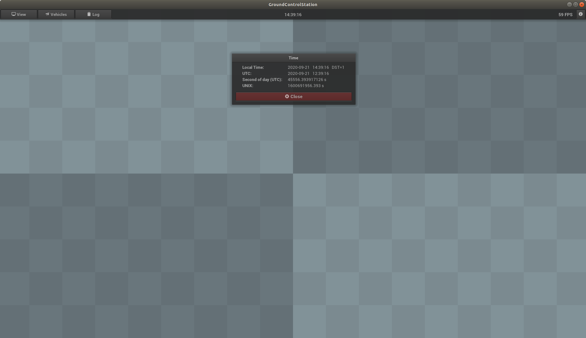

Time
The upper toolbar contains the current time (local time). With a click on the time, further information about the current time can be displayed.

Local Time
Indicates the local time. The format is "Year-Month-Day Hour:Minute:Second". DST stands for daylight-saving time.
UTC
Specifies the coordinated universal time. The format is "year-month-day hour:minute:second".
Second of day (UTC)
Specifies the second of the day according to the coordinated universal time. This time is used as timestamp for IMP messages.
UNIX
Specifies the UNIX time in seconds.